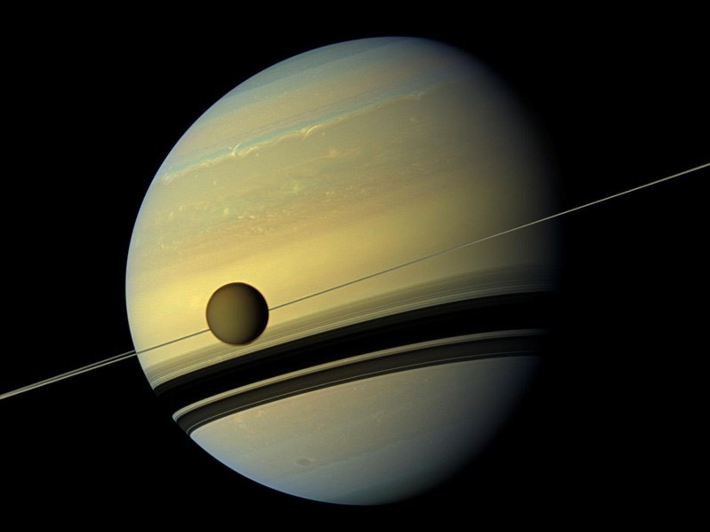

Satürn'ün boyut ve mesafesi
Ekvator çapı yaklaşık 74.897 mil (120.500 kilometre) olan Satürn, Dünya'dan 9 kat daha geniştir. Dünya
bir nikel büyüklüğünde olsaydı, Satürn yaklaşık olarak bir voleybol kadar büyük olurdu.
Ortalama 886 milyon mil (1,4 milyar kilometre) mesafeden Satürn, Güneş'ten 9,5 astronomik birim
uzaklıktadır. Bir astronomik birim (AU olarak kısaltılır), Güneş'ten Dünya'ya olan mesafedir. Bu
mesafeden, Güneş'ten Satürn'e güneş ışığının ulaşması 80 dakika sürer.

satürn'ün boyut ve mesafesi
Ekvator çapı yaklaşık 74.897 mil (120.500 kilometre) olan Satürn, Dünya'dan 9 kat daha geniştir. Dünya
bir nikel büyüklüğünde olsaydı, Satürn yaklaşık olarak bir voleybol kadar büyük olurdu.
Ortalama 886 milyon mil (1,4 milyar kilometre) mesafeden Satürn, Güneş'ten 9,5 astronomik birim
uzaklıktadır. Bir astronomik birim (AU olarak kısaltılır), Güneş'ten Dünya'ya olan mesafedir. Bu
mesafeden, Güneş'ten Satürn'e güneş ışığının ulaşması 80 dakika sürer.
Satürn'ün Yörünge ve dönüşü
Satürn, güneş sistemindeki en kısa ikinci güne sahiptir. Satürn'deki bir gün yalnızca 10,7 saat sürer
(Satürn'ün bir kez dönmesi veya etrafında dönmesi için gereken süre) ve Satürn Güneş etrafındaki tam bir
yörüngeyi (Satürn zamanına göre bir yıl) yaklaşık 29,4 Dünya yılında (10.756 Dünya günü) tamamlar.
Güneş etrafındaki yörüngesine göre ekseni 26,73 derece eğiktir, bu da Dünya'nın 23,5 derecelik eğimine
benzer. Bu, Dünya gibi Satürn'ün de mevsimler yaşadığı anlamına gelir.
Satürn'ün Halkaları
Satürn'ün halkalarının, gezegene ulaşmadan önce parçalanan kuyrukluyıldız, asteroit veya parçalanmış
uyduların parçaları olduğu ve Satürn'ün güçlü yerçekimi tarafından parçalandığı düşünülüyor. Toz gibi
diğer malzemelerle kaplanmış milyarlarca küçük buz ve kaya parçasından oluşuyorlar. Halka parçacıkları
çoğunlukla minik, toz büyüklüğündeki buzlu tanelerden bir ev kadar büyük parçalara kadar değişiyor.
Birkaç parçacık dağ kadar büyük. Halkalara Satürn'ün bulut tepelerinden bakarsanız çoğunlukla beyaz
görünürdü ve ilginç bir şekilde her halka gezegenin etrafında farklı bir hızda dönüyor.
Satürn'ün halka sistemi gezegenden 175.000 mil (282.000 kilometre) uzağa kadar uzanır, ancak ana
halkalarda dikey yükseklik genellikle yaklaşık 30 fittir (10 metre). Keşfedildikleri sıraya göre
alfabetik olarak adlandırılan halkalar, A ve B halkalarını ayıran Cassini Bölümü adı verilen 2.920 mil
(4.700 kilometre) genişliğindeki bir boşluk hariç, birbirlerine nispeten yakındır. Ana halkalar A, B ve
C'dir. D, E, F ve G halkaları daha sönüktür ve daha yakın zamanda keşfedilmiştir.
Satürn'den başlayıp dışarıya doğru hareket ettikçe, D halkası, C halkası, B halkası, Cassini Bölümü, A
halkası, F halkası, G halkası ve son olarak E halkası vardır. Çok daha uzakta, Satürn'ün uydusu
Phoebe'nin yörüngesinde çok sönük Phoebe halkası vardır.
Satürn'ün oluşumu
Satürn, yaklaşık 4,5 milyar yıl önce güneş sisteminin geri kalanı oluştuğunda, yer çekimi dönen gaz ve
tozu çekerek bu gaz devi haline geldiğinde şekillendi. Yaklaşık 4 milyar yıl önce, Satürn dış güneş
sistemindeki mevcut konumuna yerleşti ve burada Güneş'ten altıncı gezegen oldu. Jüpiter gibi, Satürn de
çoğunlukla Güneş'i oluşturan iki ana bileşen olan hidrojen ve helyumdan oluşur.
Satürn'ün yapısı
Satürn, büyük ölçüde hidrojen ve helyumdan oluşan bir gaz devi olup yapısı Jüpiter'e benzer. Gezegenin
merkezinde, yüksek basınç ve sıcaklık altında yoğun bir çekirdek bulunur. Bu çekirdek, demir ve nikel
gibi ağır metallerin yanı sıra kayalık malzemeler ve diğer bileşiklerden oluşur. Çekirdek, sıvı hidrojen
ve sıvı metalik hidrojen katmanlarıyla çevrilidir. Bu yapı, Jüpiter’in çekirdeğine benzese de Satürn’ün
çekirdeği daha küçüktür.
Satürn'ün fiziksel özellikleri oldukça ilginçtir. Güneş sistemimizdeki tüm gezegenler arasında
**ortalama yoğunluğu sudan daha düşük olan tek gezegendir.** Bu nedenle, hayali bir senaryoda Satürn’ü
devasa bir küvete koyabilseydik, gezegen suyun üzerinde yüzerdi!
Satürn'ün yüzeyi
Bir gaz devi olarak Satürn'ün gerçek bir yüzeyi yoktur. Gezegen çoğunlukla daha derinlerde dönen gazlar
ve sıvılardan oluşur. Bir uzay aracının Satürn'e inebileceği hiçbir yer olmasa da, yara almadan uçması
da mümkün olmazdı. Gezegenin derinliklerindeki aşırı basınç ve sıcaklıklar, gezegene uçmaya çalışan
herhangi bir uzay aracını ezer, eritir ve buharlaştırırdı.
Satürn'ün atmosferi
Satürn'ün yüzeyi, soluk çizgiler, jet akımları ve fırtınalar şeklinde görülen bulutlarla kaplıdır. Bu
bulutlar, gezegenin atmosferinde sarı, kahverengi ve gri tonlarında çeşitli renkler oluşturur. Bu
renkler ve desenler, Satürn’ün karmaşık atmosferik hareketlerinin bir yansımasıdır.
Gezegenin ekvator bölgesindeki rüzgarlar, inanılmaz derecede güçlüdür. Üst atmosferde rüzgar hızları
saniyede 500 metreye (1.600 feet) kadar ulaşabilir. Bu, Dünya'daki en güçlü kasırga rüzgarlarından
yaklaşık beş kat daha hızlıdır. Ayrıca, Satürn'ün atmosferinde derinlere inildikçe basınç dramatik bir
şekilde artar. Bu basınç, gazları sıkıştırarak sıvı hale getirir. Bu özellik, Satürn'ün gaz devlerinin
sıradışı doğasını anlamak için önemli bir ipucu sunar.
Satürn'ün atmosferindeki en dikkat çekici özelliklerden biri, kuzey kutbunda görülen altıgen şekilli
jet akımıdır.** Bu altıgen desen, ilk kez Voyager I uzay aracının görüntülerinde fark edilmiştir ve
daha sonra **Cassini** uzay aracı tarafından ayrıntılı bir şekilde incelenmiştir. Yaklaşık 30.000
kilometre (20.000 mil)** genişliğindeki bu altıgen yapı, Satürn'ün kutup bölgesini çevreleyen dalgalı
bir jet akımıdır. Saatte yaklaşık 322 kilometre (200 mil) hızla esen rüzgarlar tarafından
oluşturulan bu altıgen şekil, merkezinde devasa bir dönen fırtına barındırır.
Bu altıgen yapı, Satürn'ü benzersiz kılar çünkü güneş sisteminde buna benzer başka bir hava durumu şekli
bulunmamaktadır. Bilim insanları, bu şeklin nasıl oluştuğunu anlamaya çalışırken, Satürn'ün karmaşık
atmosferik dinamiklerine dair yeni bilgiler edinmeyi hedefliyorlar.